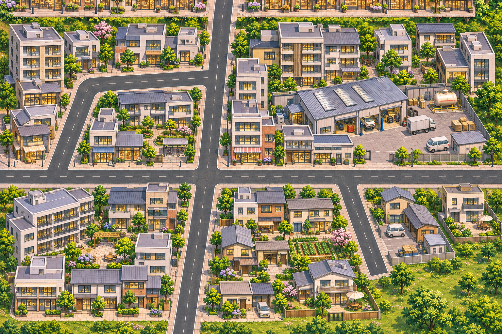

<!doctype html><html lang="zh-CN"><meta charset="utf-8"><meta name="viewport" content="width=device-width,initial-scale=1"><style>html,body{margin:0;padding:0;background:transparent;color:var(--foreground);font:14px/1.6 var(--font-sans,system-ui)}figure{margin:0}img{display:block;width:100%;height:auto}figcaption{margin-top:8px;color:var(--muted-foreground)}a{color:var(--primary)}</style><figure><a href="../regions/C-001/native.png" target="_blank"></a><figcaption>C区原生候选，1536×1024。点击可看原图；此处随页面等比显示，不代表原生1:1近景。工坊、货车/储油罐、连续街铺和住宅庭院已画入。当前只证明单区成图，北接头与三地区导航尚未交回，不是整城或用户验收。</figcaption></figure></html>